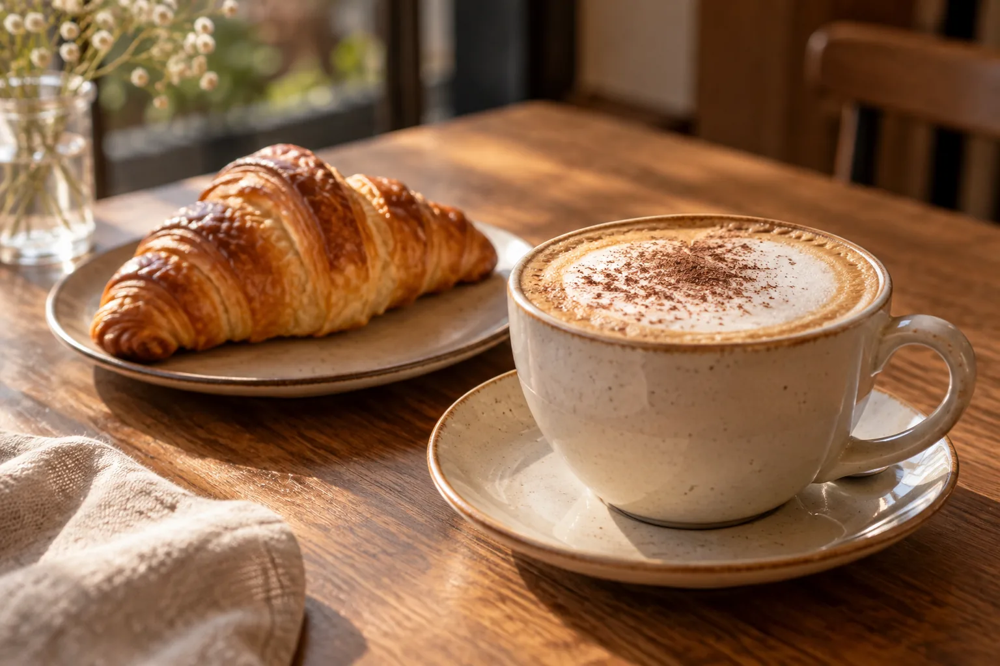

Bienvenidos a Rita
Café de especialidad, panadería artesanal y sabores simples hechos con dedicación.
Un espacio pensado para disfrutar buenos cafés, algo rico para acompañar y tomarse el tiempo de una pausa.
Ver nuestra carta
Lo que hacemos
Café de especialidad
Trabajamos con café seleccionado y preparado cuidadosamente para destacar sus sabores y aromas.
Panadería artesanal
Croissants, tortas, medialunas y productos preparados para acompañar cada café.
Opciones para todos
Bebidas calientes, bebidas frías, desayunos, meriendas, opciones saladas y productos sin TACC.